발표 대본 · AI 편집 초안
LIMEN의 개발 기록입니다.
31장면 · 1분 30초 · SVG 벡터 키비주얼 · 1920×1080
장면별 대표 프레임과 모션 지시입니다. 실물 영상은 L1–L7 자리에 합성하며, 아래 대본은 v2 타이밍에 맞춘 AI 편집 초안입니다.
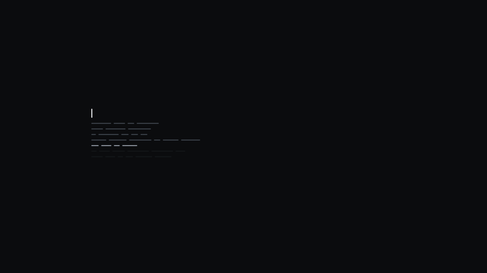
각 대표 프레임을 지정 시간 동안 보여줍니다. 모션·음성·실물 영상이 포함된 완성 영상은 아닙니다. ← → 키로 장면을 바꿀 수 있습니다.
LIMEN의 개발 기록입니다.
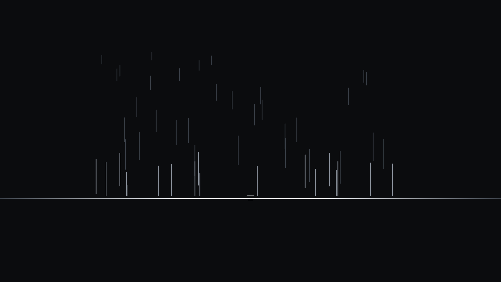
없음
로그 막대들이 90° 돌아 세로 속도선이 되어 떨어짐(ease-in) → y=760 가로선에 닿으며 가운데가 한 번 밝아짐
말 없음 — 화면 전환
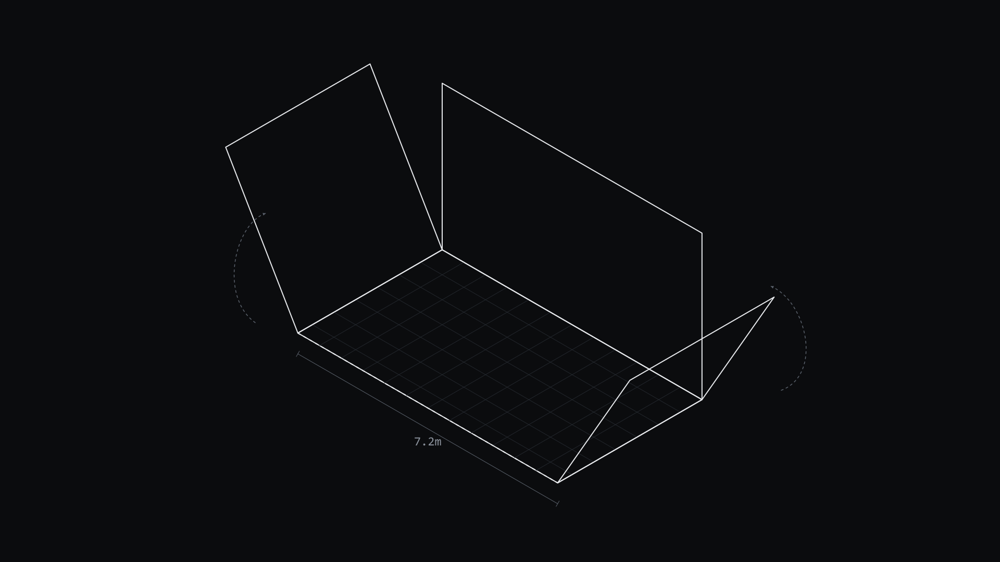
치수선(7.2m), 벽 회전 화살표, 열린 입구 표시
S02 가로선이 바닥 앞 모서리로 매치 컷 → 바닥·격자 trim path → 정면 벽 → 좌·우 벽이 경첩처럼 일어섬(오버슈트 3°) → 치수선
정면과 양옆 벽, 바닥으로 이루어진 네 면입니다.
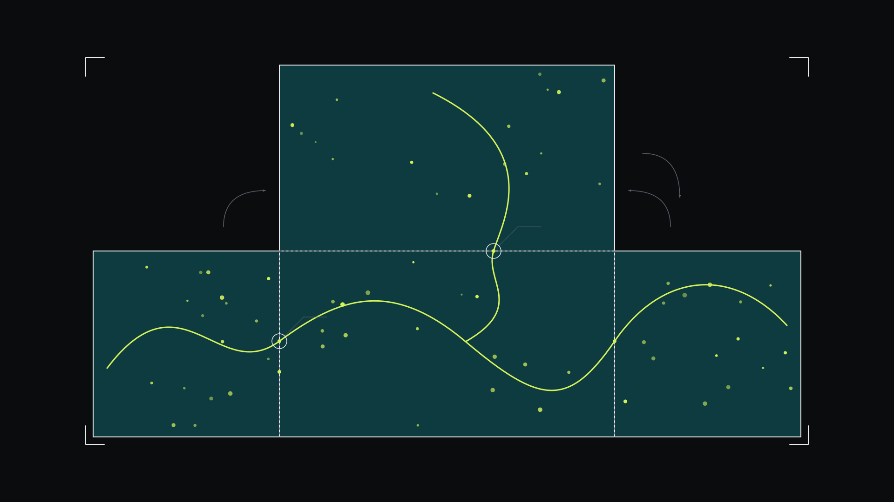
접힘 화살표, 경첩 점선, 이음매를 넘는 곡선 위 콜아웃, 전체를 감싸는 크롭 마크(= 한 장)
좌·우 벽이 바깥으로 90° 눕고 정면 벽이 위로 눕는다(scaleY로 3D 흉내) → 네 판에 content가 마스크 한 번으로 동시에 채워짐 → 크롭 마크 4개가 바깥에서 안으로 스냅
네 면을 하나의 장면으로 연결합니다.
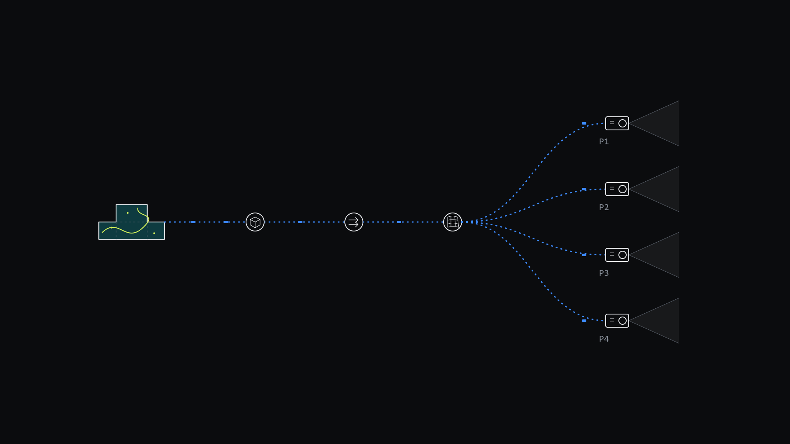
DATA_FLOW 점선과 패킷, 노드 기호(엔진·전송·워핑), P1~P4 라벨
NET_ICON에서 패킷이 출발해 노드 3개 통과 → 네 갈래로 갈라짐 → 네 프로젝터 렌즈가 같은 프레임에 켜짐
프로젝터 네 대로 나누어 출력합니다.
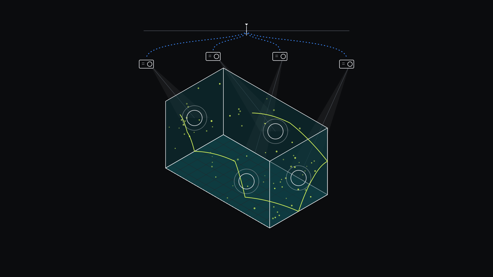
하나의 재생 막대(시계) → 네 프로젝터로 떨어지는 점선, 네 면 가운데 같은 위상의 펄스 링
위쪽 재생 막대의 플레이헤드가 이동 → 틱마다 네 면 펄스 링이 같은 프레임에 번쩍
4면 동시 출력의 개념도. 최종 워핑·블렌딩 완료를 증명하는 화면이 아닙니다.
네 면이 같은 순간을 비추도록 구성했습니다.
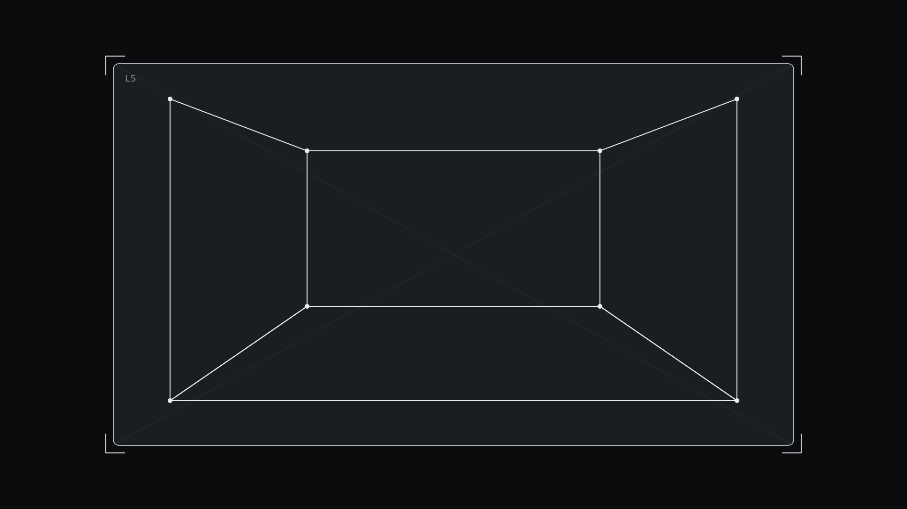
촬영본 위에 방 윤곽선을 겹쳐 그래픽과 현실을 연결
S06의 방 윤곽이 그대로 남은 채 안쪽이 촬영본으로 바뀜(디졸브) → 윤곽선이 촬영본의 실제 벽 모서리에 맞춰짐
L5 실제 4면 투사 영상 삽입 후, 8개 정합점을 촬영 화면에 맞춰 조정합니다.
말 없음 — 화면 전환
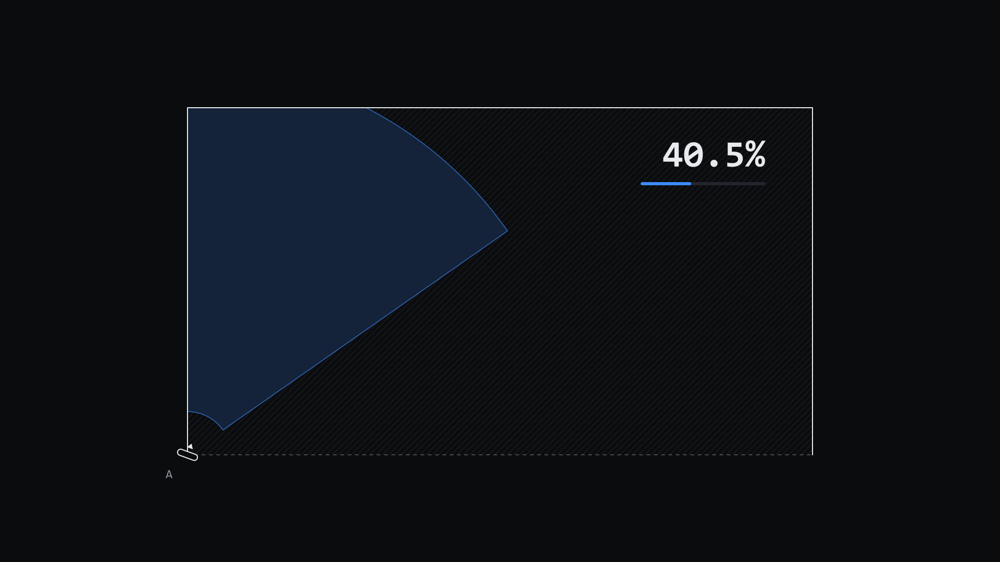
부채꼴 시야, 못 보는 영역 해칭, 큰 숫자 + 막대
부채꼴이 0→70° 쓸고 지나감(회전 마스크) → 남은 영역에 해칭이 떠오름 → 숫자 카운트업
40.5%는 참고 프롬프트의 시야 면적 계산값(가림 미반영)입니다. 실제 추적 성공률이 아닙니다. 이 도식은 수치 산출용 면적 차트가 아닙니다.
키넥트 한 대로는 시야가 부족했습니다.
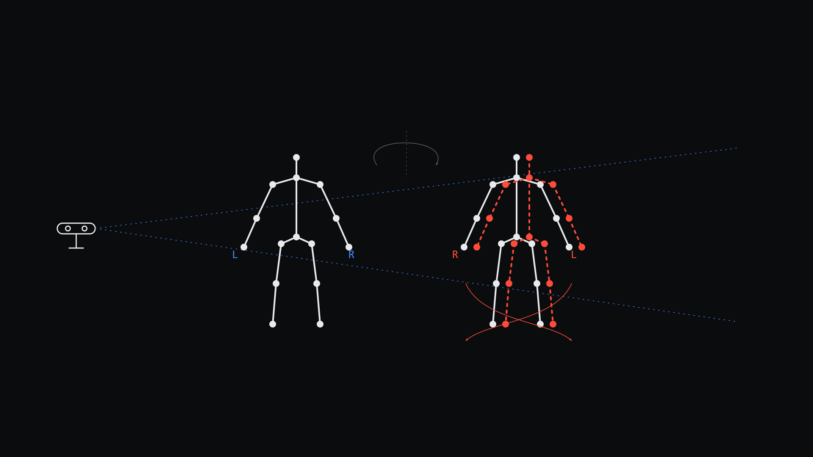
앞모습/뒷모습 두 단계 비교, 180° 회전 화살표, L/R 라벨이 엇갈리는 교차 화살표
왼쪽 뼈대(정면) → 180° 회전 화살표 → 오른쪽 뼈대(뒷모습)에서 red 점선 복제가 옆으로 튀어나오며 L/R가 교차
등을 돌리면 좌우 인식도 뒤바뀌었습니다.
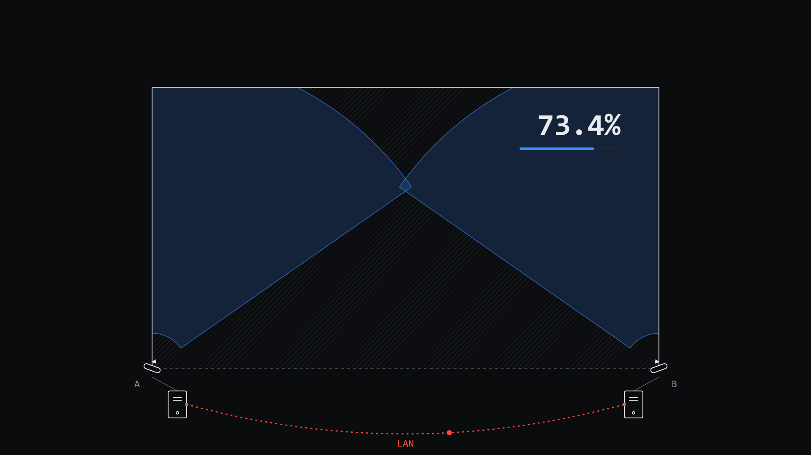
두 부채꼴 겹침, 숫자 변화, PC 2대 사이 빨간 점선 포물선(LAN)
B 부채꼴이 쓸고 지나감 → 숫자 40.5→73.4 카운트 → PC 아이콘 등장 → LAN_ARC가 trim path로 그려지고 빨간 점이 PC A→B로 달림
73.4% 역시 참고 문서의 시야 면적 계산값입니다. 랜선 연결은 현재 기준 2026-10-26 확정 내용을 따릅니다.
키넥트와 컴퓨터를 두 대로 늘렸습니다.
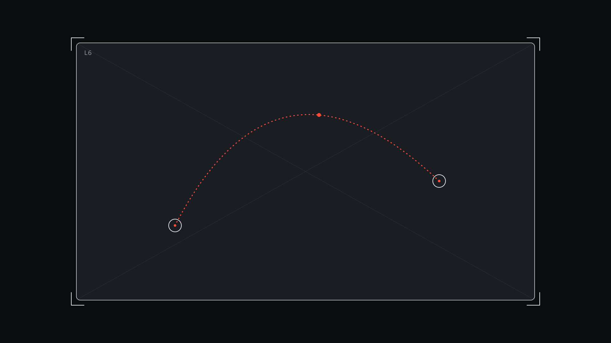
촬영본 속 두 장비를 잇는 빨간 점선 포물선 오버레이
S09의 빨간 포물선이 그대로 촬영본 위로 넘어와 노트북과 메인 PC를 잇는다(매치 컷)
L6 촬영본의 노트북·메인 PC 위치에 포물선 양 끝점을 맞춥니다.
두 컴퓨터는 랜선으로 연결했습니다.
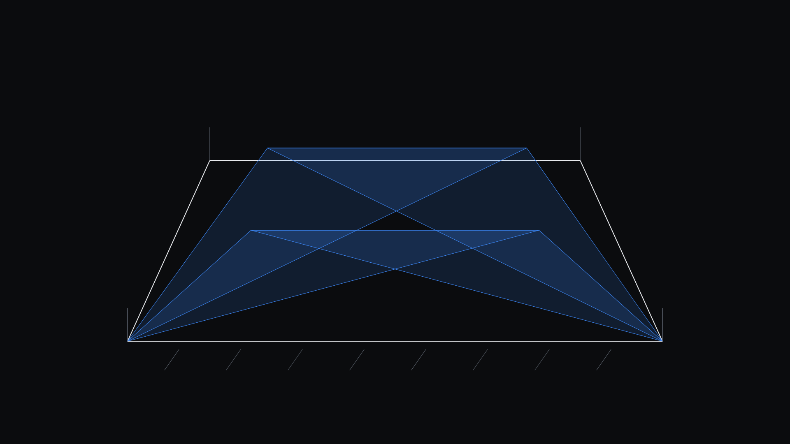
속도선
평면도가 앞으로 기울며 사다리꼴이 되고, 부채꼴이 세워져 삼각 시야뿔이 됨(1초)
말 없음 — 화면 전환
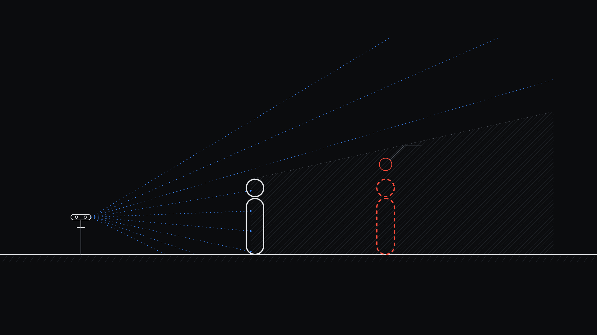
옆에서 자른 단면도, 시야 광선, 그림자 영역 해칭, 사라진 사람 = 빨간 점선
시야 광선이 퍼짐 → 앞사람이 걸어 들어와 광선을 막음 → 그 뒤 그림자 영역이 쓸려 나가며 뒷사람이 실선에서 red 점선으로 바뀜
앞사람에 가려진 관객이 사라지고,
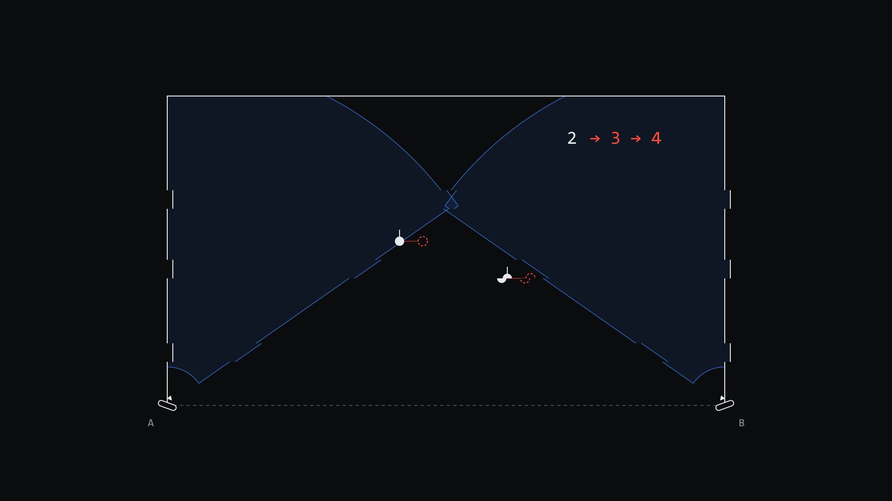
한 사람에서 갈라져 나온 유령 표시(빨간 점선 원 + 연결선), 인원 카운터
유령 표시가 하나씩 튀어나오고 카운터가 2→3→4로 바뀜 → 가로 띠 3개가 12px씩 어긋나는 벡터 글리치(2프레임씩)
한 사람이 둘로 잡혀 없는 사람이 생겼습니다.
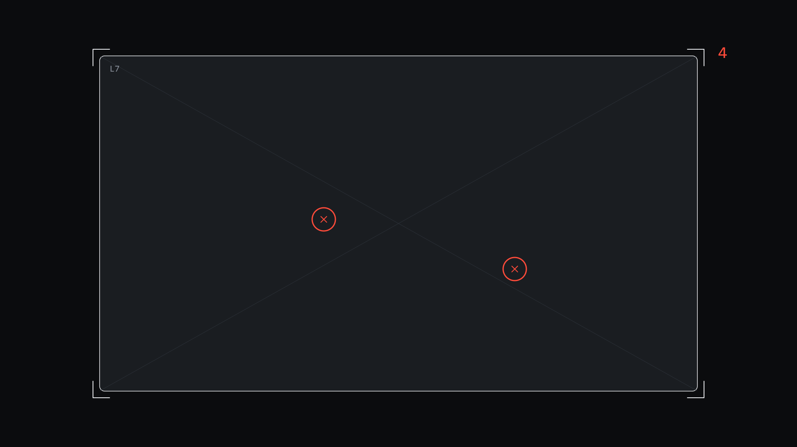
촬영본 속 유령 위치에 빨간 원 표시
S12 유령 원이 촬영본 위 같은 자리로 넘어와 깜빡임
L7 실제 오류 영상의 유령 위치에 빨간 원을 맞춥니다. 현재 원 위치는 합성용 예시입니다.
말 없음 — 화면 전환
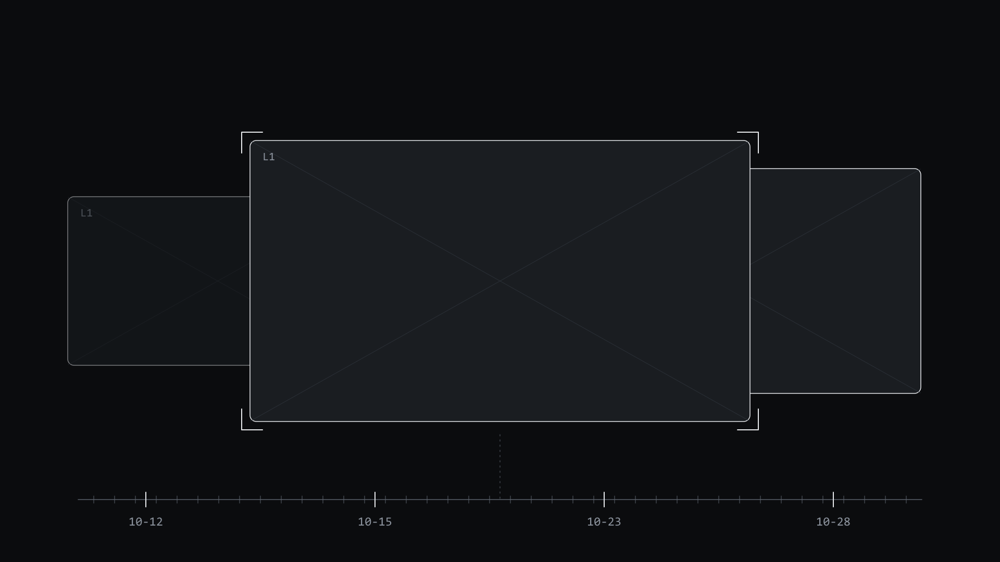
아래쪽 날짜 타임라인 축 위로 촬영본 프레임들이 흘러감 = 시간이 지나며 반복한 시도
FRAME_LIVE 3장이 깊이(크기 1/0.8/0.6)를 달리해 왼쪽으로 흘러감, 컷이 점점 빨라짐, 아래 타임라인 눈금이 함께 이동
코드를 고치고 현장에서 시험하기를 반복했습니다.
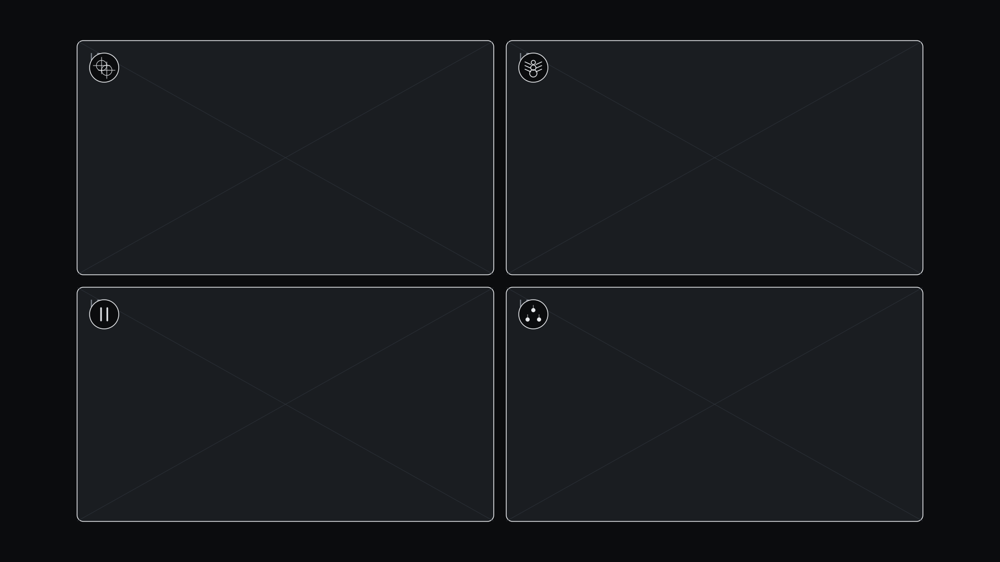
칸마다 왼쪽 위 작은 아이콘(보정 어긋남·개미·멈춤·3명)으로 무엇을 시도했는지 글자 없이 표시
가운데 십자선이 trim path로 그어지며 화면이 2×2로 갈라짐 → 아이콘이 칸마다 순서대로 튀어나옴
보정과 반응, 여러 인원을 시험했습니다.
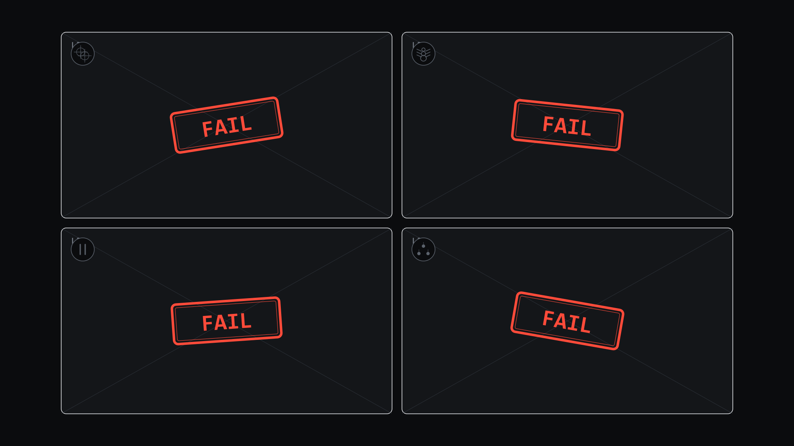
회색 처리 + 벡터 도장
칸마다 0.8초 간격: 채도 0 + 어둡게 → 도장이 1.3배에서 1배로 눌리며 찍힘(오버슈트)
실패를 확인하고 다시 고쳤습니다.
시도는 계속 늘어났습니다.
말 없음 — 화면 전환
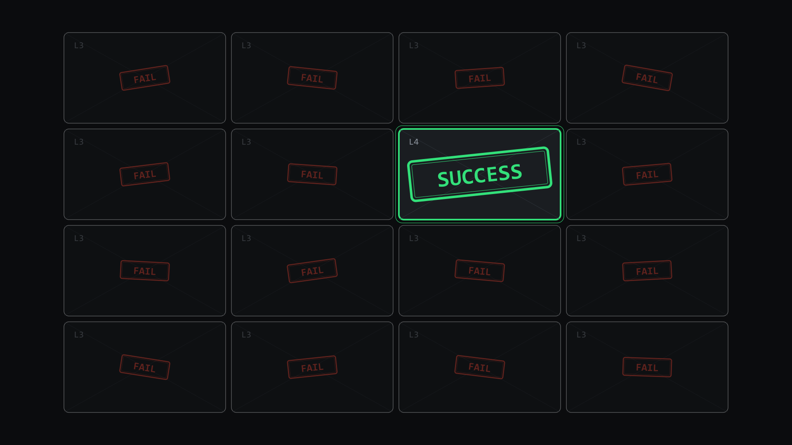
초록 테두리 + 초록 도장, 나머지 칸 어둡게 눌러 대비
남은 칸 테두리를 green 선이 한 바퀴 그림(trim path) → SUCCESS 도장 → 나머지 칸 opacity .35로
SUCCESS는 자체 시험의 개선을 상징합니다. L4 실물 영상은 아직 삽입하지 않았으며, 현장 검증 완료를 뜻하지 않습니다. 대본은 S19까지 이어 읽을 수 있습니다.
자체 시험에서 개선을 확인했습니다.
말 없음 — 화면 전환
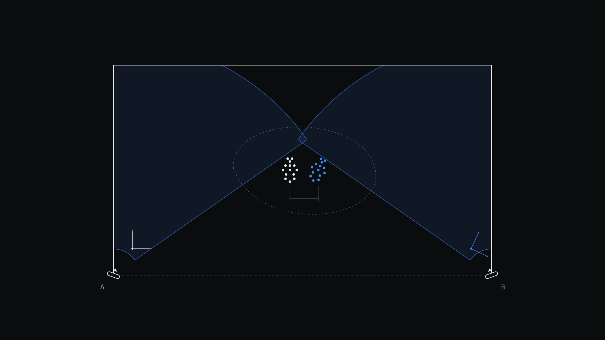
센서마다 좌표축 기즈모, 같은 사람이 두 점묶음으로, 어긋남 치수선, 걸은 경로 점선
촬영본 속 사람이 점묶음 두 개로 바뀌는 매치 컷 → 두 묶음이 따로 걷는 모습 → 치수선 등장
선택 숫자 94cm를 생략했습니다. 두 점묶음은 동일한 사람을 본 센서 좌표의 개념 표현입니다.
먼저 두 센서의 좌표를 맞췄습니다.
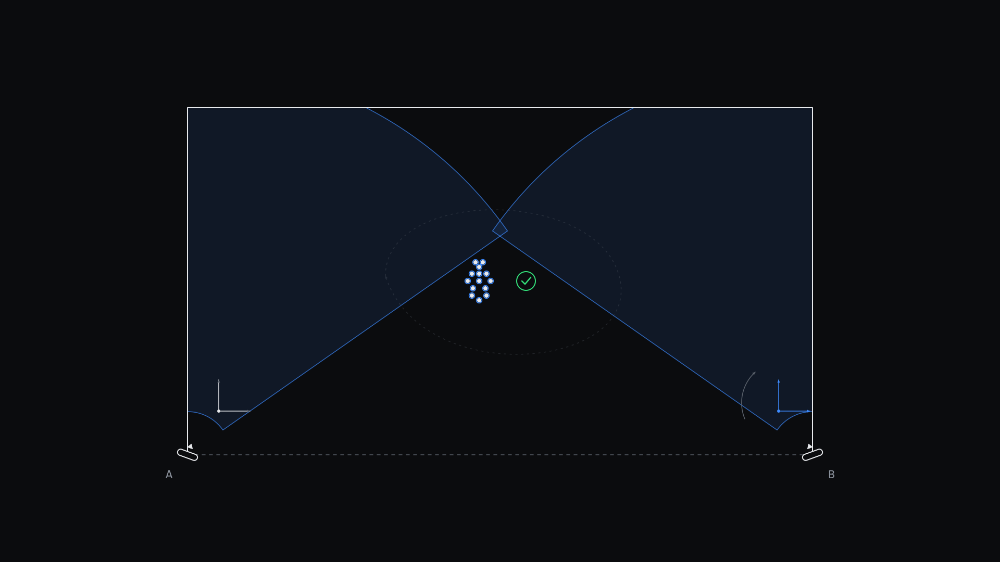
B 좌표축이 돌아가 맞는 회전 화살표, 치수선이 점으로 줄어듦, green 체크
B 기즈모가 회전 화살표를 따라 25° 돌아감 → blue 묶음이 미끄러져 겹침 → 치수선이 0으로 → 체크 원
선택 숫자 0.2cm를 생략했습니다. 보정 후 정확한 겹침은 개념도이며 현장 오차 0을 뜻하지 않습니다.
같은 사람이 걸은 위치를 기준으로 보정합니다.
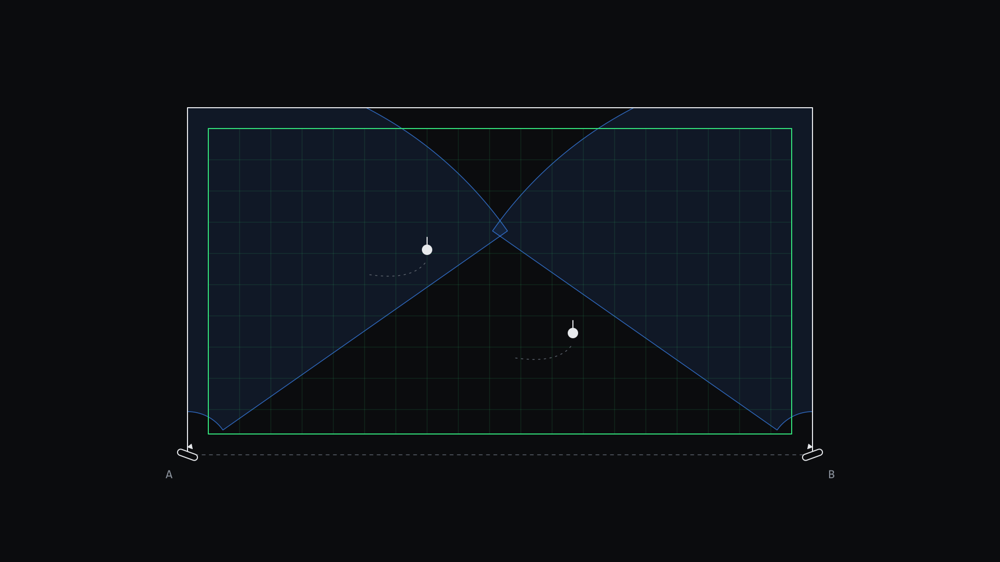
초록 영역 + 내부 격자, 사람 표시
green 선이 모서리부터 달리며 사각형을 그림 → 내부 격자가 페이드 인 → 두 사람이 걸어 다님
그려진 격자·40px 여백은 시각화 배치입니다. 실측 세이프존 경계를 새로 확정하지 않습니다.
그리고 세이프존을 만들었습니다.
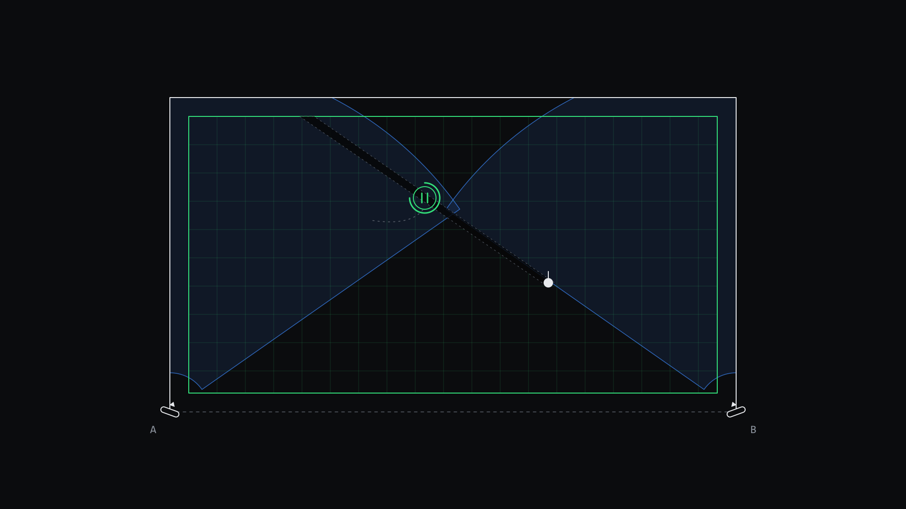
키넥트에서 뻗은 그림자 쐐기, 마지막 자리의 초록 링 + 일시정지 기호 + 멈춘 진행 호
한 사람이 다른 사람 뒤로 들어감 → 그림자 쐐기가 생기며 표시가 사라짐 → 그 자리에 green 링이 남고 진행 호는 멈춰 있음 → 다시 보이면 링이 흰 점으로 돌아옴
가려진 동안 유지 타이머가 멈추는 상태. B 센서–앞사람–마지막 위치가 일직선이 되도록 앞사람 x 좌표를 980→1162로 조정했습니다.
가려진 동안에는 마지막 자리를 유지합니다.
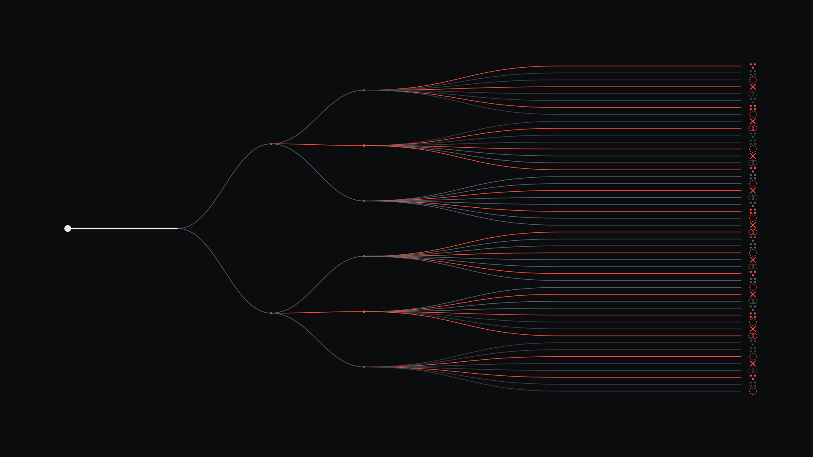
한 줄의 타임라인이 평행한 여러 갈래로 분기, 갈래 끝마다 다른 '경우'의 아이콘(3명·4명·유령·X)
왼쪽 한 줄이 흐르다가 분기점마다 갈래가 쏟아지듯 갈라짐(곡선 trim path, 0.1초 간격 stagger), 갈래 끝 아이콘이 팝
인원이 늘면 경우의 수도 늘어납니다.
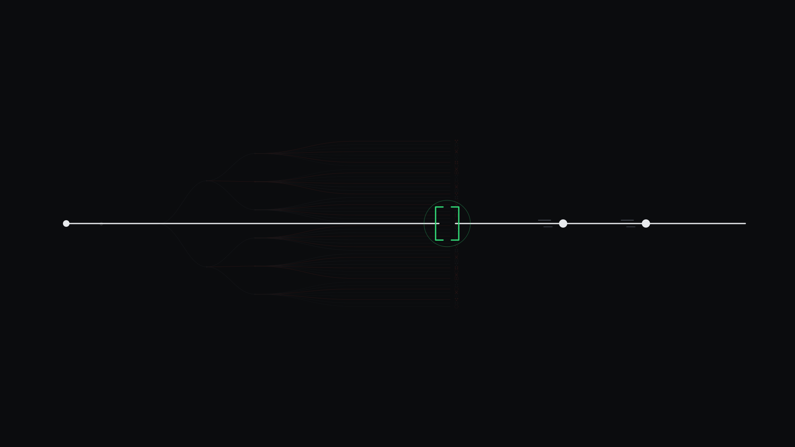
초록 브래킷이 한 줄을 붙잡음, 다른 갈래들이 되감겨 사라짐, 남은 한 줄 위의 사람 두 명
x=1080에 green 브래킷 [ ]이 위아래에서 조여들어 가운데 줄을 붙잡음 → 갈래들이 역방향 trim path로 되감기며 흐려짐 → 남은 한 줄이 굵어지며 오른쪽 끝까지 뻗고 사람 표시 2개가 그 위를 달림
개발 시험의 최대 2명 설정입니다. 전시 운영 인원을 2명으로 변경한 뜻이 아닙니다.
시험 설정을 두 명으로 제한했습니다.
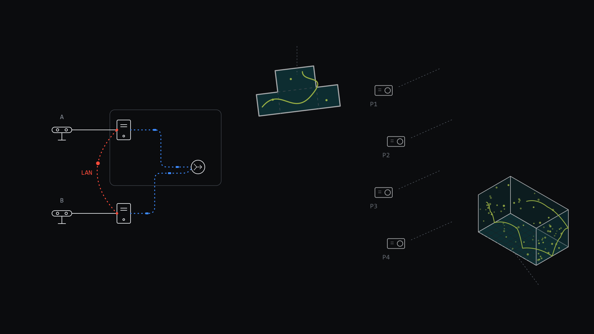
앞에서 쓴 아이콘이 그대로 다시 등장(키넥트·PC·LAN·노드·전개도·프로젝터·방)
아이콘들이 화면 가장자리에서 직선 꼬리를 달고 날아와 왼쪽(입력)부터 오른쪽(출력) 순서로 자리에 박힘, 박힐 때마다 연결선이 그려짐
메인 PC 영역 안에 합치기 노드를 배치했습니다. 송출 PC는 센서 입력을 전달하며 보정·합치기를 담당하지 않습니다.
메인 컴퓨터에서 두 센서의 입력을 합치고,
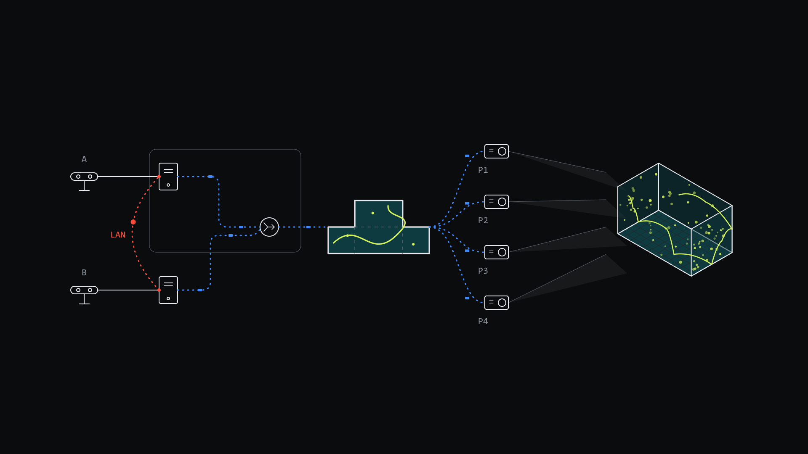
한 장으로 읽히는 전체 흐름: 키넥트 A·B → PC 2대(LAN) → 합치기 → 한 장 → P1~P4 → 4면 방
완성 후 DATA_FLOW 패킷이 왼쪽에서 오른쪽까지 한 번 훑고 지나감 → 방 네 면이 동시에 켜짐 → 1초 정지
메인 PC 영역 안에서 두 센서 입력을 합치는 현재 구조를 표시합니다. 프로젝터는 4대입니다.
하나의 장면을 네 면에 출력하는 구조입니다.
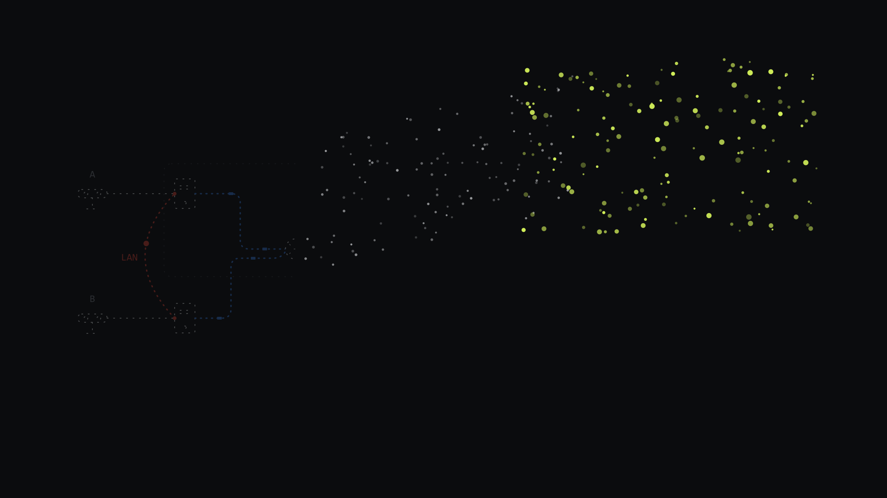
구조도의 선이 점선 → 점 → 반딧불이(연두 점)로 바뀌는 과정
구조도 선의 dasharray가 점점 벌어져 점이 되고, 점들이 위로 떠오르며 연두색으로 바뀌고 제각기 깜빡이다 꺼짐
개발로그의 마무리 시각화입니다. 본편의 첫 장면은 개미이며 이 그림을 본편 첫 장면으로 설명하지 않습니다.
LIMEN의 개발은 이어집니다.
LIMEN 개발로그 키비주얼 v2 — 제작 메모 작성일: 2026-10-29 산출물 • 31장면 × SVG/PNG 각 1개. PNG는 모두 1920×1080. • contact_sheet.png: 시간 순서의 4열 확인용 시트. • index.html / 상위 폴더 개발로그영상_콘티_v2.html: 그림·타임코드·모션 지시·대본 초안. 90초 정지 컷 미리보기 포함. • build_svg.py, render.cjs, package.py: 도형 생성·PNG 렌더·검수 및 묶음 재생성 코드. • 이번 산출물은 정지 키비주얼입니다. 완성 모션 영상, 음성, 실물 영상 합성은 포함하지 않습니다. 기준과 상태 • LIMEN_현재기준.md를 프로젝트 사실의 최우선 기준으로 적용했습니다. • 기준 PDF 19쪽의 텍스트, 동기화 지침, 배포본 01, 키넥트 연구노트 및 중요.md를 대조했습니다. • 직접 확인한 것은 문서와 생성 이미지입니다. 현장 센서 시험을 수행하지 않았습니다. • S06·S27은 4면 출력 개념도입니다. 최종 워핑·다인 추적 완료의 증거가 아닙니다. • 성공·실패 도장은 개발 과정의 시각화입니다. 합성용 L3·L4의 실제 촬영 증거는 추후 넣습니다. • 대본은 기존 v1 대본을 참고해 v2 타이밍에 맞춰 줄인 AI 편집 초안입니다. 팀 확정 대본이 아닙니다. 프롬프트와 달리 조정한 부분 • S26·S27 합치기 노드를 메인 PC 경계 안에 넣어 송출 PC가 보정한다는 오해를 줄였습니다. • S23 앞사람 x=980→1162: B 센서와 마지막 자리 사이의 가림 광선을 정렬했습니다. • S20·S21의 선택 숫자 94cm/0.2cm는 넣지 않았습니다. • 지정 폰트 Pretendard·JetBrains Mono가 설치되어 있지 않아 SVG 라벨은 Consolas, 확인 페이지는 맑은 고딕을 대체 폰트로 사용했습니다. • 공통 120px 여백과 개별 지시가 충돌하는 곳은 개별 지시를 따랐습니다(전폭 바닥선, 2×2 분할, 화면 밖으로 밀리는 프레임, S09 LAN). • 색 토큰 외 #3A4048·#1A1D21·#2A2F36·#141619·#060708은 장면 지시의 명시적 색상입니다. #000000은 보이지 않는 마스크 계산에만 사용했습니다. 시야 수치와 그림의 관계 • 40.5%/73.4%는 참고 프롬프트가 제시한 가림 미반영 바닥 시야 면적입니다. 실제 추적 성공률이 아닙니다. • 도형은 지시된 1200×667 방, 모서리 센서, 70° 부채꼴, 83/750px 반경, 전방에서 안쪽으로 20° 회전을 따릅니다. • 이 수치를 문자 그대로 적용한 도형 면적은 참고 비율과 일치하지 않습니다. 지시의 형상·라벨은 보존하되, 면적을 정확히 계량하는 차트로 사용하지 마십시오. 20°의 기준축·센서 실제 오프셋을 확정하면 함께 조정할 수 있습니다. • 방 높이는 4m라는 확정값을 넣지 않았습니다. 아이소메트릭 높이는 프롬프트가 지정한 도식 비율입니다. 촬영본 교체 L1 코드 화면 → S13 L2 현장 전경 → S13 L3 실패 클립 → S14–S17 L4 성공 클립 → S18–S19 L5 실제 4면 투사 → S06L L6 랜선·설치 → S09L L7 오류 화면 → S12L 실물 화면 위 포물선·방 윤곽·오류 원은 촬영본 삽입 뒤 위치를 맞춰야 합니다. 편집 SVG는 외부 이미지·스크립트·폰트 다운로드 없이 열립니다. 반복 도형은 symbol/use로 재사용합니다. Illustrator 등에서 SVG를 연 뒤 필요하면 심볼을 확장하고 AI로 저장하여 AE에 가져옵니다. 이번 작업은 기존 v1 산출물·콘티·현재 기준 문서를 수정하지 않았습니다.